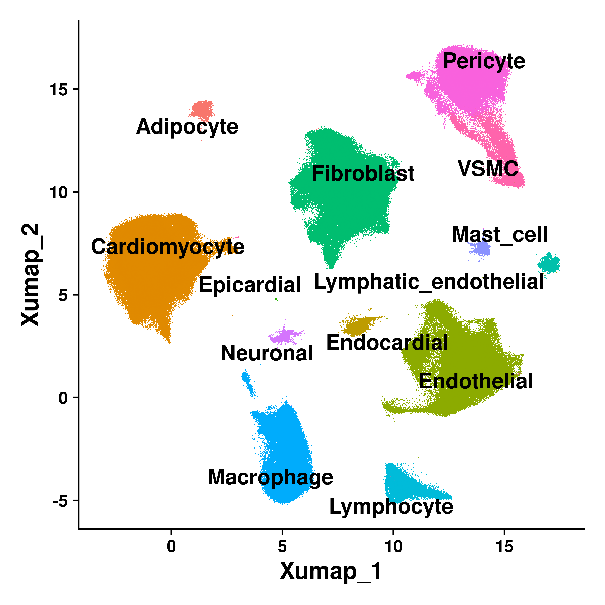
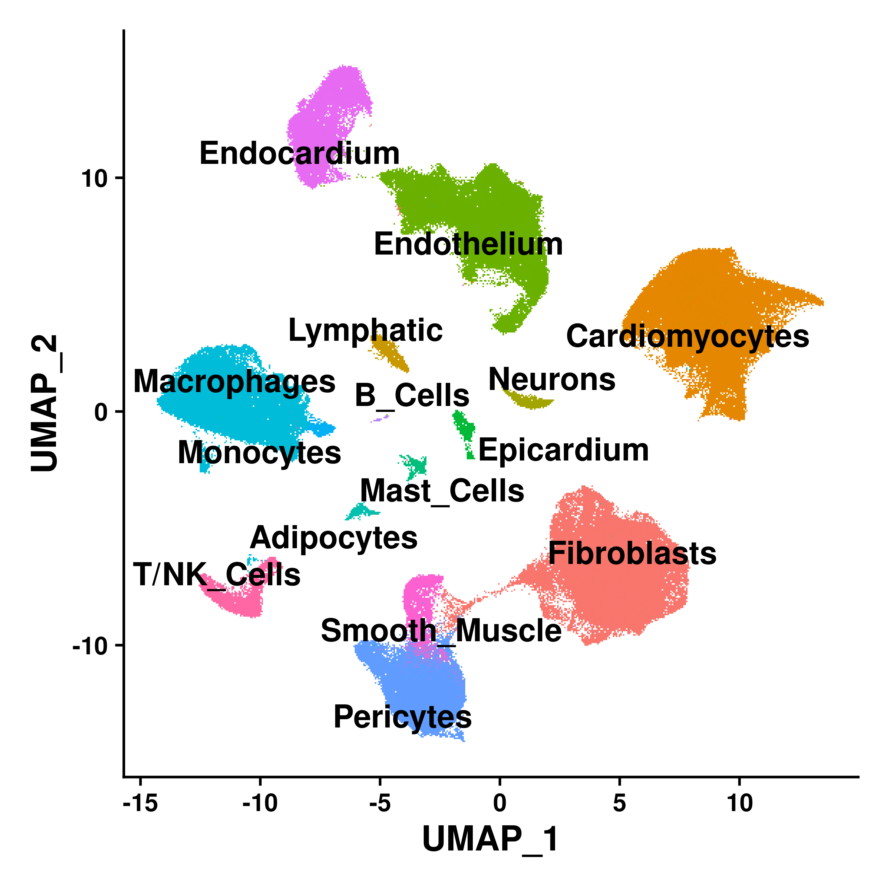

Last updated: 2025-11-12
Checks: 7 0
Knit directory: DCM_snRNAseq/
This reproducible R Markdown analysis was created with workflowr (version 1.7.1). The Checks tab describes the reproducibility checks that were applied when the results were created. The Past versions tab lists the development history.
Great! Since the R Markdown file has been committed to the Git repository, you know the exact version of the code that produced these results.
Great job! The global environment was empty. Objects defined in the global environment can affect the analysis in your R Markdown file in unknown ways. For reproduciblity it’s best to always run the code in an empty environment.
The command set.seed(20240606) was run prior to running
the code in the R Markdown file. Setting a seed ensures that any results
that rely on randomness, e.g. subsampling or permutations, are
reproducible.
Great job! Recording the operating system, R version, and package versions is critical for reproducibility.
Nice! There were no cached chunks for this analysis, so you can be confident that you successfully produced the results during this run.
Great job! Using relative paths to the files within your workflowr project makes it easier to run your code on other machines.
Great! You are using Git for version control. Tracking code development and connecting the code version to the results is critical for reproducibility.
The results in this page were generated with repository version 046275d. See the Past versions tab to see a history of the changes made to the R Markdown and HTML files.
Note that you need to be careful to ensure that all relevant files for
the analysis have been committed to Git prior to generating the results
(you can use wflow_publish or
wflow_git_commit). workflowr only checks the R Markdown
file, but you know if there are other scripts or data files that it
depends on. Below is the status of the Git repository when the results
were generated:
Ignored files:
Ignored: .Rhistory
Ignored: .Rproj.user/
Ignored: output/CellChat/
Ignored: output/Chaffin_2022/
Ignored: output/Comparison_RV_bulk_RNAseq/
Ignored: output/Figures_manuscript/
Ignored: output/Koenig_2022/
Ignored: output/SSc_PAH/
Ignored: output/Variance_partitioning/
Untracked files:
Untracked: GRCh38-2020-A_build/
Untracked: Pseudobulk_all.csv
Untracked: Pseudobulk_byCellType_wilcox.csv
Untracked: analysis/Chaffin_2022.Rmd
Untracked: analysis/Chaffin_wilcox.csv
Untracked: analysis/Comparison_RV_bulk_RNAseq.Rmd
Untracked: analysis/DA_DE_all_cell_types_and_parameters.Rmd
Untracked: analysis/DE_Group_all_cell_types.Rmd
Untracked: analysis/EC_capillary_angiogenic_boxplot_stats.csv
Untracked: analysis/Endothelial_cells_Koenig_Reichart.rmd
Untracked: analysis/Endothelial_cells_SGLT2_I.Rmd
Untracked: analysis/Endothelial_cells_subclustering.Rmd
Untracked: analysis/Endothelial_cells_subclustering.rmd
Untracked: analysis/Fibroblasts_DA_DE_26.Rmd
Untracked: analysis/Genes_Luxembourg.Rmd
Untracked: analysis/HC_DEGs_clustering.Rmd
Untracked: analysis/Koenig_2022.Rmd
Untracked: analysis/Koenig_wilcox.csv
Untracked: analysis/Lymphocytes_subclustering.Rmd
Untracked: analysis/Macrophages_subclustering.Rmd
Untracked: analysis/Mass_Spec_RV_dysf.Rmd
Untracked: analysis/Mural_cells_subclustering.Rmd
Untracked: analysis/Olink_RV_dysf.Rmd
Untracked: analysis/Olink_SSc_PAH.Rmd
Untracked: analysis/Olink_SSc_PAH_draft.Rmd
Untracked: analysis/Pseudobulk_all.csv
Untracked: analysis/Pseudobulk_byCellType_facetGrid.pdf
Untracked: analysis/Pseudobulk_byCellType_filtered_wrap3col.pdf
Untracked: analysis/Pseudobulk_byCellType_filtered_wrap3col_proportional.pdf
Untracked: analysis/Pseudobulk_byCellType_wilcox.csv
Untracked: analysis/Pseudobulk_byCellType_wilcox.filtered.csv
Untracked: analysis/Reichart_wilcox.csv
Untracked: analysis/Selection_genes_histology.Rmd
Untracked: analysis/TOM/
Untracked: analysis/UntitledR.R
Untracked: analysis/VennDiagram.2024-09-16_14-12-56.160498.log
Untracked: analysis/VennDiagram.2024-09-16_14-13-17.340014.log
Untracked: analysis/VennDiagram.2024-09-16_14-13-57.942673.log
Untracked: analysis/VennDiagram.2024-09-16_14-22-50.621507.log
Untracked: analysis/VennDiagram.2024-09-16_14-24-47.010131.log
Untracked: analysis/VennDiagram.2024-09-18_11-22-29.278827.log
Untracked: analysis/VennDiagram.2025-03-25_17-41-35.50458.log
Untracked: analysis/VennDiagram.2025-03-25_17-41-41.199096.log
Untracked: analysis/VennDiagram.2025-03-25_17-41-59.64245.log
Untracked: analysis/VennDiagram.2025-03-25_17-45-11.922474.log
Untracked: analysis/VennDiagram.2025-03-25_17-50-36.483812.log
Untracked: analysis/VennDiagram.2025-03-25_17-56-46.244322.log
Untracked: analysis/VennDiagram.2025-03-25_17-58-30.74362.log
Untracked: analysis/VennDiagram.2025-03-26_15-54-09.244636.log
Untracked: analysis/VennDiagram.2025-06-11_14-53-30.499963.log
Untracked: analysis/ec_Reichart_logCPM.csv
Untracked: analysis/omnipathr-log/
Untracked: code/Add_metadata.R
Untracked: code/Check DYSF.R
Untracked: code/Clustering_genes.R
Untracked: code/DE_5_percent.Rmd
Untracked: code/DE_5_percent.html
Untracked: code/DE_5_percent/
Untracked: code/DE_CM_test1.R
Untracked: code/DE_no_401.Rmd
Untracked: code/DE_no_401.html
Untracked: code/DE_no_401/
Untracked: code/Differential abundance test1.R
Untracked: code/Differential_Expression_edgeR_All.Rmd
Untracked: code/Differential_Expression_edgeR_All_2.Rmd
Untracked: code/Differential_Expression_edgeR_All_2.html
Untracked: code/Differential_Expression_edgeR_All_Age.Rmd
Untracked: code/Differential_Expression_edgeR_All_Age_2.Rmd
Untracked: code/Differential_Expression_edgeR_All_Age_2.html
Untracked: code/Differential_Expression_edgeR_All_groups.Rmd
Untracked: code/Differential_Expression_edgeR_All_groups.html
Untracked: code/Differential_Expression_edgeR_All_groups_2.Rmd
Untracked: code/Differential_Expression_edgeR_All_groups_2.html
Untracked: code/Differential_Expression_edgeR_All_groups_3.Rmd
Untracked: code/Differential_Expression_edgeR_All_groups_3.html
Untracked: code/PCA and CCA analysis test.R
Untracked: code/Pseudobulk DCM HC.R
Untracked: code/Published_heart_datasets_RV_vs_LV.Rmd
Untracked: code/QC_integration_annotation_orig.Rmd
Untracked: code/Removed_chunks.Rmd
Untracked: code/UpSet_plot_DEGs.Rmd
Untracked: code/Volcano_highlighted_genes.R
Untracked: code/ezInteractiveTable.Rmd
Untracked: code/ezInteractiveTable.html
Untracked: code/old.R
Untracked: data/Cellbender_output/
Untracked: data/Cellranger_output/
Untracked: data/DCM_Clinical_data.xlsx
Untracked: data/DCM_Clinical_data_26.xlsx
Untracked: data/DCM_Clinical_data_30.xlsx
Untracked: data/Homo_sapiens.GRCh38.93.gtf
Untracked: data/Human_plasma_proteome.xlsx
Untracked: data/Massons_quantification.xlsx
Untracked: data/Published_datasets/
Untracked: data/Raw/
Untracked: data/SSc-PAH/
Untracked: data/gencode.v46.chr_patch_hapl_scaff.annotation.gtf
Untracked: data/gencode.v46.chr_patch_hapl_scaff.basic.annotation.gtf
Untracked: data/refdata-gex-GRCh38-2020-A/
Untracked: omnipathr-log/
Untracked: output/CM_lncRNAs/
Untracked: output/Cardiomyocytes_DA_DE/
Untracked: output/Cardiomyocytes_subclustering/
Untracked: output/Cardiomyocytes_subclustering_26/
Untracked: output/Cell_cell_communication/
Untracked: output/Cell_cell_communication_LV/
Untracked: output/Cell_cell_communication_LV2/
Untracked: output/Comparison_LV/
Untracked: output/DA_DE_all_cell_types_and_parameters/
Untracked: output/DE_Fibrosis_all_cell_types/
Untracked: output/DE_Group_all_cell_types/
Untracked: output/DE_all_cell_types_mPAP/
Untracked: output/DE_mPAP_all_cell_types/
Untracked: output/Differential_expression_edgeR_All/
Untracked: output/Differential_expression_edgeR_All_Age/
Untracked: output/Dysferlin/
Untracked: output/Endothelial_cells_Koenig_Reichart/
Untracked: output/Endothelial_cells_SGLT2_I/
Untracked: output/Endothelial_cells_published_datasets/
Untracked: output/Endothelial_cells_subclustering/
Untracked: output/Fibroblasts_DA_DE_26/
Untracked: output/Fibroblasts_subclustering/
Untracked: output/Genes_Luxembourg/
Untracked: output/HC_DEGs_clustering/
Untracked: output/LV_Klaudia/
Untracked: output/Lymphocytes_subclustering/
Untracked: output/Macrophages_subclustering/
Untracked: output/Mass_Spec_RV_dysf/
Untracked: output/Mural_cells_subclustering/
Untracked: output/Olink_RV_dysf/
Untracked: output/Olink_SSc_PAH/
Untracked: output/Olink_SSc_PAH_draft/
Untracked: output/QC_integration_annotation/
Untracked: output/Reichart_DE_DCMvsHC/
Untracked: output/Selection_genes_histology/
Untracked: output/UntitledR.R
Untracked: reference_sources/
Unstaged changes:
Modified: analysis/CM_lncRNAs.Rmd
Modified: analysis/Comparison_LV.Rmd
Modified: analysis/DE_mPAP_all_cell_types.Rmd
Deleted: analysis/Differential_Expression_edgeR_All.Rmd
Deleted: analysis/Differential_Expression_edgeR_All_Age.Rmd
Modified: analysis/Endothelial_cells_published_datasets.rmd
Modified: analysis/Fibroblasts_subclustering.Rmd
Modified: analysis/Genes_Luxembourg_2.Rmd
Modified: analysis/LV_Klaudia.Rmd
Modified: analysis/Reichart_DE_DCMvsHC.Rmd
Modified: analysis/SSc_PAH.Rmd
Note that any generated files, e.g. HTML, png, CSS, etc., are not included in this status report because it is ok for generated content to have uncommitted changes.
These are the previous versions of the repository in which changes were
made to the R Markdown (analysis/Dysferlin.Rmd) and HTML
(docs/Dysferlin.html) files. If you’ve configured a remote
Git repository (see ?wflow_git_remote), click on the
hyperlinks in the table below to view the files as they were in that
past version.
| File | Version | Author | Date | Message |
|---|---|---|---|---|
| Rmd | 046275d | GinoBonazza | 2025-11-12 | wflow_publish("analysis/Dysferlin.Rmd") |
Setup
# Get current file name to make folder
current_file <- "Dysferlin"
# Load libraries
library(here)
library(readr)
library(readxl)
library(xlsx)
library(Seurat)
library(DropletUtils)
library(Matrix)
library(scDblFinder)
library(scCustomize)
library(dplyr)
library(ggplot2)
library(magrittr)
library(tidyverse)
library(reshape2)
library(S4Vectors)
library(SingleCellExperiment)
library(pheatmap)
library(png)
library(gridExtra)
library(knitr)
library(scales)
library(RColorBrewer)
library(Matrix.utils)
library(tibble)
library(ggplot2)
library(scater)
library(patchwork)
library(statmod)
library(ArchR)
library(clustree)
library(harmony)
library(gprofiler2)
library(clusterProfiler)
library(org.Hs.eg.db)
library(AnnotationHub)
library(ReactomePA)
library(statmod)
library(edgeR)
library(speckle)
library(EnhancedVolcano)
library(decoupleR)
library(OmnipathR)
library(dorothea)
library(enrichplot)
library(png)
library(reactable)
library(UpSetR)
library(ComplexHeatmap)
library(rtracklayer)
library(cowplot)
library(nichenetr)
library(multinichenetr)
library(muscat)
#Output paths
output_dir_data <- here::here("output", current_file)
if (!dir.exists(output_dir_data)) dir.create(output_dir_data)
if (!dir.exists(here::here("docs", "figure"))) dir.create(here::here("docs", "figure"))
output_dir_figs <- here::here("docs", "figure", paste0(current_file, ".Rmd"))
if (!dir.exists(output_dir_figs)) dir.create(output_dir_figs)Reichart
Load seurat object
Reichart <- readRDS("/scratch/gbonaz/Heart_datasets/Reichart_2022/DCM_ACM_heart_cell_atlas.rds")
Reichart_gene_names <- data.frame(
ensembl_id = rownames(Reichart),
gene_symbol = Reichart@assays[["RNA"]]@meta.features$feature_name
)
rownames(Reichart@assays[["RNA"]]@data) <- Reichart@assays[["RNA"]]@meta.features$feature_name
rownames(Reichart@assays[["RNA"]]@counts) <- Reichart@assays[["RNA"]]@meta.features$feature_name
Idents(Reichart) <- Reichart$cell_typeClinical_data <- read_excel("/scratch/gbonaz/Heart_datasets/Reichart_2022/Reichart_et_al_Science_2022_Selected_clinical_info.xlsx")
add_metadata <- left_join(Reichart[["donor_id"]], Clinical_data)
row.names(add_metadata) <- row.names(Reichart[[]])
Reichart <- AddMetaData(Reichart, metadata = add_metadata)
rm(add_metadata, Clinical_data)Reichart <- subset(
Reichart,
disease %in% c("dilated cardiomyopathy", "normal") &
cell_type != "unknown"
)
table(Reichart$cell_type, Reichart$disease)
non-compaction cardiomyopathy
mast cell 0
endothelial cell 0
adipocyte 0
lymphocyte 0
cardiac muscle cell 0
myeloid cell 0
fibroblast of cardiac tissue 0
mural cell 0
cardiac neuron 0
unknown 0
dilated cardiomyopathy
mast cell 513
endothelial cell 80278
adipocyte 939
lymphocyte 10218
cardiac muscle cell 142946
myeloid cell 38754
fibroblast of cardiac tissue 79381
mural cell 93095
cardiac neuron 5688
unknown 0
arrhythmogenic right ventricular cardiomyopathy
mast cell 0
endothelial cell 0
adipocyte 0
lymphocyte 0
cardiac muscle cell 0
myeloid cell 0
fibroblast of cardiac tissue 0
mural cell 0
cardiac neuron 0
unknown 0
normal
mast cell 1250
endothelial cell 18808
adipocyte 1057
lymphocyte 2779
cardiac muscle cell 141825
myeloid cell 8045
fibroblast of cardiac tissue 36939
mural cell 53391
cardiac neuron 2125
unknown 0table(unique(dplyr::select(Reichart@meta.data, c("disease", "donor_id")))$disease)
non-compaction cardiomyopathy
0
dilated cardiomyopathy
52
arrhythmogenic right ventricular cardiomyopathy
0
normal
18 VlnPlot_scCustom(Reichart, features="DYSF", group.by="cell_type", num_columns=1, pt.size = 0) & theme(axis.title.x = element_blank()) + NoLegend()
FeaturePlot_scCustom(Reichart, features = "DYSF")+
theme(axis.text=element_text(size=10, face = "bold"), axis.title = element_text(size = 14, face = "bold"))
p <- DimPlot(Reichart, group.by = "cell_type", reduction = "umap", label = F) +
NoLegend() +
theme(axis.text=element_text(size=10, face = "bold"), axis.title = element_text(size = 14, face = "bold")) +
theme(plot.title = element_blank())
LabelClusters(p, id = "cell_type", fontface = "bold", size = 4.5, repel = T)
detect_by_celltype <- function(seu, genes, cell_type_col) {
mat <- SeuratObject::GetAssayData(seu, assay = "RNA", slot = "counts")
present <- intersect(genes, rownames(mat))
mat <- mat[present, , drop = FALSE]
ct <- factor(seu@meta.data[colnames(mat), cell_type_col, drop = TRUE])
det <- Matrix::Matrix(mat > 0, sparse = TRUE)
X <- Matrix::sparse.model.matrix(~ ct - 1)
colnames(X) <- sub("^ct", "", colnames(X))
expr_cells <- as.matrix(det %*% X)
n_cells_ct <- colSums(X)
df <- data.frame(
gene = rep(rownames(expr_cells), times = ncol(expr_cells)),
cell_type = rep(colnames(expr_cells), each = nrow(expr_cells)),
n_expr_cells = as.vector(expr_cells),
n_cells = as.integer(n_cells_ct[rep(colnames(expr_cells), each = nrow(expr_cells))]),
percent_expressing = NA_real_
)
df$percent_expressing <- 100 * df$n_expr_cells / pmax(1, df$n_cells)
df[order(df$gene, df$cell_type), ]
}goi <- "DYSF"Reichart_percent <- detect_by_celltype(Reichart, "DYSF", "cell_type")
write_csv(Reichart_percent, here::here(output_dir_data, "Reichart_Percent_per_cell_type.csv"))
reactable(Reichart_percent,
filterable = TRUE,
searchable = TRUE,
showPageSizeOptions = TRUE,
defaultPageSize = 10)Reichart@meta.data <- Reichart@meta.data %>%
mutate(Group = case_when(
disease == "normal" ~ "HC",
disease == "dilated cardiomyopathy" ~ "DCM"
))
Reichart$Sample_id <- Reichart$Sample
Reichart$Sample <- Reichart$donor_id
metadata <- Reichart@meta.data %>%
dplyr::select(Sample, Group) %>%
unique() %>%
dplyr::arrange(match(Sample, names(table(Reichart$Sample))))
rownames(metadata) <- metadata$Samplepb_ct <- Seurat2PB(Reichart, sample = "Sample", cluster = "cell_type")
keep_cols <- pb_ct$samples$lib.size > 5e4
pb_ct <- pb_ct[, keep_cols, keep.lib.sizes = FALSE]
pb_ct <- edgeR::normLibSizes(pb_ct)
logcpm_ct <- edgeR::cpm(pb_ct, log = TRUE)
col_annot <- pb_ct$samples %>%
dplyr::transmute(Sample = .data$sample, cell_type = .data$cluster) %>%
dplyr::left_join(metadata, by = "Sample")
colnames(logcpm_ct) <- paste(col_annot$Sample, col_annot$cell_type, sep = "::")
min_detect <- 10
counts_ct <- pb_ct$counts
present_genes <- intersect(goi, rownames(counts_ct))
missing_genes <- setdiff(goi, rownames(counts_ct))
if (length(missing_genes) > 0) {
message("Warning: not found in pseudobulk matrix -> ", paste(missing_genes, collapse = ", "))
}
stopifnot(length(present_genes) > 0)
det_tbl <- lapply(present_genes, function(g) {
data.frame(
cell_type = col_annot$cell_type,
detected = as.integer(counts_ct[g, ] > 0)
) |>
dplyr::group_by(cell_type) |>
dplyr::summarise(n_detect = sum(detected), .groups = "drop") |>
dplyr::mutate(gene = g)
}) |>
dplyr::bind_rows()
keep_pairs <- det_tbl |>
dplyr::filter(n_detect >= min_detect) |>
dplyr::transmute(key = paste(cell_type, gene, sep = "||")) |>
dplyr::pull(key)
expr_long_ct <- logcpm_ct[present_genes, , drop = FALSE] |>
t() |>
as.data.frame() |>
tibble::rownames_to_column(var = "col_id") |>
dplyr::mutate(
Sample = sub("::.*$", "", col_id),
cell_type = sub("^.*::", "", col_id)
) |>
dplyr::left_join(metadata, by = "Sample") |>
tidyr::pivot_longer(cols = all_of(present_genes),
names_to = "gene", values_to = "logCPM") |>
dplyr::mutate(
key = paste(cell_type, gene, sep = "||"),
keep = key %in% keep_pairs,
Group = factor(Group, levels = c("HC", "DCM")),
gene = factor(gene, levels = goi)
) |>
dplyr::filter(keep) |>
dplyr::select(-keep, -key)
expr_long_ct <- droplevels(expr_long_ct)
wilcox_ct <- expr_long_ct |>
dplyr::group_by(cell_type, gene) |>
dplyr::summarise(
n_HC = sum(Group == "HC"),
n_DCM = sum(Group == "DCM"),
median_HC = median(logCPM[Group == "HC"], na.rm = TRUE),
median_DCM = median(logCPM[Group == "DCM"], na.rm = TRUE),
diff_median = median_DCM - median_HC,
p_wilcox = tryCatch(wilcox.test(logCPM ~ Group)$p.value, error = function(e) NA_real_),
.groups = "drop"
) |>
dplyr::group_by(gene) |>
dplyr::mutate(p_adj_BH_within_gene = p.adjust(p_wilcox, method = "BH")) |>
dplyr::ungroup()
readr::write_csv(wilcox_ct, here::here(output_dir_data, "Reichart_wilcox.csv"))
make_gene_plot <- function(df, g, ncol_facets = 3, base_size = 11) {
df_g <- df %>% filter(gene == g)
ggplot(df_g, aes(x = Group, y = logCPM, fill = Group)) +
geom_boxplot(outlier.shape = NA, width = 0.6, alpha = 0.7) +
geom_jitter(aes(color = Group), width = 0.12, height = 0, size = 1.8, alpha = 0.9) +
ggpubr::stat_compare_means(
method = "wilcox.test",
comparisons = list(c("HC","DCM")),
label = "p.format",
label.y.npc = 0.98,
vjust = 0,
size = 3
) +
facet_wrap(~ cell_type, ncol = ncol_facets, scales = "free_y") +
labs(x = NULL, y = "logCPM",
title = paste("Pseudobulk by cell type -", as.character(g))) +
scale_fill_manual(values = c(HC = "#4C78A8", DCM = "#F58518")) +
scale_color_manual(values = c(HC = "#4C78A8", DCM = "#F58518")) +
scale_y_continuous(expand = expansion(mult = c(0.05, 0.25))) +
coord_cartesian(clip = "off") +
theme_bw(base_size = base_size) +
theme(
panel.grid.major.x = element_blank(),
legend.position = "none",
strip.text = element_text(face = "bold"),
strip.background = element_rect(fill = "grey95"),
plot.margin = margin(8, 16, 8, 8)
)
}
# genes to plot (preserve your order)
genes_to_plot <- intersect(levels(expr_long_ct$gene), goi)
# build plots
plots <- lapply(genes_to_plot, function(g) make_gene_plot(expr_long_ct, g, ncol_facets = 4))
# compute number of facet rows per gene (for proportional heights)
rows_per_gene <- sapply(genes_to_plot, function(g) {
n_ct <- expr_long_ct %>% filter(gene == g) %>% pull(cell_type) %>% n_distinct()
ceiling(n_ct / 4) # 4 columns
})
# scale to heights (each row gets the same height unit)
heights_vec <- rows_per_gene / sum(rows_per_gene)
# stack with proportional heights
p_stack <- wrap_plots(plots, ncol = 1) + plot_layout(heights = heights_vec)
print(p_stack)
Chaffin
Load seurat object
Chaffin <- readRDS("/scratch/gbonaz/Heart_datasets/Chaffin_2022/Chaffin.rds")
Chaffin <- RenameAssays(Chaffin, originalexp = "RNA")
DefaultAssay(Chaffin) <- "RNA"
Chaffin@meta.data[Chaffin@meta.data$cell_type_leiden0.6 %in% c("Activated_fibroblast", "Fibroblast_I", "Fibroblast_II"), "cell_type"] = "Fibroblast"
Chaffin@meta.data[Chaffin@meta.data$cell_type_leiden0.6 %in% c("Adipocyte"), "cell_type"] = "Adipocyte"
Chaffin@meta.data[Chaffin@meta.data$cell_type_leiden0.6 %in% c("Cardiomyocyte_I", "Cardiomyocyte_II", "Cardiomyocyte_III"), "cell_type"] = "Cardiomyocyte"
Chaffin@meta.data[Chaffin@meta.data$cell_type_leiden0.6 %in% c("Endocardial"), "cell_type"] = "Endocardial"
Chaffin@meta.data[Chaffin@meta.data$cell_type_leiden0.6 %in% c("Endothelial_I", "Endothelial_II", "Endothelial_III"), "cell_type"] = "Endothelial"
Chaffin@meta.data[Chaffin@meta.data$cell_type_leiden0.6 %in% c("Epicardial"), "cell_type"] = "Epicardial"
Chaffin@meta.data[Chaffin@meta.data$cell_type_leiden0.6 %in% c("Lymphatic_endothelial"), "cell_type"] = "Lymphatic_endothelial"
Chaffin@meta.data[Chaffin@meta.data$cell_type_leiden0.6 %in% c("Lymphocyte"), "cell_type"] = "Lymphocyte"
Chaffin@meta.data[Chaffin@meta.data$cell_type_leiden0.6 %in% c("Macrophage", "Proliferating_macrophage"), "cell_type"] = "Macrophage"
Chaffin@meta.data[Chaffin@meta.data$cell_type_leiden0.6 %in% c("Mast_cell"), "cell_type"] = "Mast_cell"
Chaffin@meta.data[Chaffin@meta.data$cell_type_leiden0.6 %in% c("Neuronal"), "cell_type"] = "Neuronal"
Chaffin@meta.data[Chaffin@meta.data$cell_type_leiden0.6 %in% c("Pericyte_I", "Pericyte_II"), "cell_type"] = "Pericyte"
Chaffin@meta.data[Chaffin@meta.data$cell_type_leiden0.6 %in% c("VSMC"), "cell_type"] = "VSMC"
Idents(Chaffin) <- Chaffin$cell_type
Chaffin <- NormalizeData(Chaffin)Chaffin <- subset(
Chaffin,
disease %in% c("NF", "DCM")
)
table(Chaffin$cell_type, Chaffin$disease)
DCM HCM NF
Adipocyte 1438 0 1437
Cardiomyocyte 36107 0 63682
Endocardial 2043 0 2239
Endothelial 28055 0 26412
Epicardial 67 0 0
Fibroblast 51356 0 38219
Lymphatic_endothelial 1403 0 1107
Lymphocyte 6357 0 3816
Macrophage 19059 0 15385
Mast_cell 1490 0 1855
Neuronal 1347 0 1407
Pericyte 17175 0 26433
VSMC 6099 0 3449table(unique(dplyr::select(Chaffin@meta.data, c("disease", "donor_id")))$disease)
DCM HCM NF
11 0 16 VlnPlot_scCustom(Chaffin, features="DYSF", group.by="cell_type", num_columns=1, pt.size = 0) & theme(axis.title.x = element_blank()) + NoLegend()
FeaturePlot_scCustom(Chaffin, features = "DYSF")+
theme(axis.text=element_text(size=10, face = "bold"), axis.title = element_text(size = 14, face = "bold"))
p <- DimPlot(Chaffin, group.by = "cell_type", label = F) +
NoLegend() +
theme(axis.text=element_text(size=10, face = "bold"), axis.title = element_text(size = 14, face = "bold")) +
theme(plot.title = element_blank())
LabelClusters(p, id = "cell_type", fontface = "bold", size = 4.5, repel = T)
Chaffin_percent <- detect_by_celltype(Chaffin, "DYSF", "cell_type")
write_csv(Chaffin_percent, here::here(output_dir_data, "Chaffin_Percent_per_cell_type.csv"))
reactable(Chaffin_percent,
filterable = TRUE,
searchable = TRUE,
showPageSizeOptions = TRUE,
defaultPageSize = 10)Chaffin@meta.data <- Chaffin@meta.data %>%
mutate(Group = case_when(
disease == "NF" ~ "HC",
disease == "DCM" ~ "DCM"
))
Chaffin$Sample <- Chaffin$donor_id
metadata <- Chaffin@meta.data %>%
dplyr::select(Sample, Group) %>%
unique() %>%
dplyr::arrange(match(Sample, names(table(Chaffin$Sample))))
rownames(metadata) <- metadata$Samplepb_ct <- Seurat2PB(Chaffin, sample = "Sample", cluster = "cell_type")
keep_cols <- pb_ct$samples$lib.size > 5e4
pb_ct <- pb_ct[, keep_cols, keep.lib.sizes = FALSE]
pb_ct <- edgeR::normLibSizes(pb_ct)
logcpm_ct <- edgeR::cpm(pb_ct, log = TRUE)
col_annot <- pb_ct$samples %>%
dplyr::transmute(Sample = .data$sample, cell_type = .data$cluster) %>%
dplyr::left_join(metadata, by = "Sample")
colnames(logcpm_ct) <- paste(col_annot$Sample, col_annot$cell_type, sep = "::")
min_detect <- 10
counts_ct <- pb_ct$counts
present_genes <- intersect(goi, rownames(counts_ct))
missing_genes <- setdiff(goi, rownames(counts_ct))
if (length(missing_genes) > 0) {
message("Warning: not found in pseudobulk matrix -> ", paste(missing_genes, collapse = ", "))
}
stopifnot(length(present_genes) > 0)
det_tbl <- lapply(present_genes, function(g) {
data.frame(
cell_type = col_annot$cell_type,
detected = as.integer(counts_ct[g, ] > 0)
) |>
dplyr::group_by(cell_type) |>
dplyr::summarise(n_detect = sum(detected), .groups = "drop") |>
dplyr::mutate(gene = g)
}) |>
dplyr::bind_rows()
keep_pairs <- det_tbl |>
dplyr::filter(n_detect >= min_detect) |>
dplyr::transmute(key = paste(cell_type, gene, sep = "||")) |>
dplyr::pull(key)
expr_long_ct <- logcpm_ct[present_genes, , drop = FALSE] |>
t() |>
as.data.frame() |>
tibble::rownames_to_column(var = "col_id") |>
dplyr::mutate(
Sample = sub("::.*$", "", col_id),
cell_type = sub("^.*::", "", col_id)
) |>
dplyr::left_join(metadata, by = "Sample") |>
tidyr::pivot_longer(cols = all_of(present_genes),
names_to = "gene", values_to = "logCPM") |>
dplyr::mutate(
key = paste(cell_type, gene, sep = "||"),
keep = key %in% keep_pairs,
Group = factor(Group, levels = c("HC", "DCM")),
gene = factor(gene, levels = goi)
) |>
dplyr::filter(keep) |>
dplyr::select(-keep, -key)
expr_long_ct <- droplevels(expr_long_ct)
wilcox_ct <- expr_long_ct |>
dplyr::group_by(cell_type, gene) |>
dplyr::summarise(
n_HC = sum(Group == "HC"),
n_DCM = sum(Group == "DCM"),
median_HC = median(logCPM[Group == "HC"], na.rm = TRUE),
median_DCM = median(logCPM[Group == "DCM"], na.rm = TRUE),
diff_median = median_DCM - median_HC,
p_wilcox = tryCatch(wilcox.test(logCPM ~ Group)$p.value, error = function(e) NA_real_),
.groups = "drop"
) |>
dplyr::group_by(gene) |>
dplyr::mutate(p_adj_BH_within_gene = p.adjust(p_wilcox, method = "BH")) |>
dplyr::ungroup()
readr::write_csv(wilcox_ct, "Chaffin_wilcox.csv")
# genes to plot (preserve your order)
genes_to_plot <- intersect(levels(expr_long_ct$gene), goi)
# build plots
plots <- lapply(genes_to_plot, function(g) make_gene_plot(expr_long_ct, g, ncol_facets = 4))
# compute number of facet rows per gene (for proportional heights)
rows_per_gene <- sapply(genes_to_plot, function(g) {
n_ct <- expr_long_ct %>% filter(gene == g) %>% pull(cell_type) %>% n_distinct()
ceiling(n_ct / 4) # 4 columns
})
# scale to heights (each row gets the same height unit)
heights_vec <- rows_per_gene / sum(rows_per_gene)
# stack with proportional heights
p_stack <- wrap_plots(plots, ncol = 1) + plot_layout(heights = heights_vec)
print(p_stack)
Koenig
Load seurat object
load("/scratch/gbonaz/Heart_datasets/Koenig_2022/GSE183852_DCM_Nuclei.Robj")
Koenig <- nuclei
rm(nuclei)
DefaultAssay(Koenig) <- "RNA"
Koenig <- NormalizeData(Koenig)
Koenig$cell_type <- Koenig$Names
Idents(Koenig) <- Koenig$cell_typeClinical_data <- read_excel("/scratch/gbonaz/Heart_datasets/Koenig_2022/Koenig_et_al_2022_Selected_clinical_info.xlsx")
add_metadata <- left_join(Koenig[["orig.ident"]], Clinical_data)
row.names(add_metadata) <- row.names(Koenig[[]])
Koenig <- AddMetaData(Koenig, metadata = add_metadata)
rm(add_metadata, Clinical_data)table(Koenig$cell_type, Koenig$Condition)
DCM Donor
Fibroblasts 20388 28736
Cardiomyocytes 6478 40598
Lymphatic 991 1302
Neurons 643 1221
Endothelium 12665 25364
Epicardium 465 936
Mast_Cells 199 1142
Adipocytes 369 710
Macrophages 10392 18860
Monocytes 488 316
Pericytes 3983 19152
B_Cells 70 81
Endocardium 5881 10060
Smooth_Muscle 1480 3203
T/NK_Cells 2177 2402table(unique(dplyr::select(Koenig@meta.data, c("Condition", "orig.ident")))$Condition)
DCM Donor
13 25 VlnPlot_scCustom(Koenig, features="DYSF", group.by="cell_type", num_columns=1, pt.size = 0) & theme(axis.title.x = element_blank()) + NoLegend()
FeaturePlot_scCustom(Koenig, features = "DYSF")+
theme(axis.text=element_text(size=10, face = "bold"), axis.title = element_text(size = 14, face = "bold"))
p <- DimPlot(Koenig, group.by = "cell_type", label = F) +
NoLegend() +
theme(axis.text=element_text(size=10, face = "bold"), axis.title = element_text(size = 14, face = "bold")) +
theme(plot.title = element_blank())
LabelClusters(p, id = "cell_type", fontface = "bold", size = 4.5, repel = T)
Koenig_percent <- detect_by_celltype(Koenig, "DYSF", "cell_type")
write_csv(Koenig_percent, here::here(output_dir_data, "Koenig_Percent_per_cell_type.csv"))
reactable(Koenig_percent,
filterable = TRUE,
searchable = TRUE,
showPageSizeOptions = TRUE,
defaultPageSize = 10)Koenig@meta.data <- Koenig@meta.data %>%
mutate(Group = case_when(
Condition == "Donor" ~ "HC",
Condition == "DCM" ~ "DCM"
))
Koenig$Sample <- Koenig$orig.ident
metadata <- Koenig@meta.data %>%
dplyr::select(Sample, Group) %>%
unique() %>%
dplyr::arrange(match(Sample, names(table(Koenig$Sample))))
rownames(metadata) <- metadata$Samplepb_ct <- Seurat2PB(Koenig, sample = "Sample", cluster = "cell_type")
keep_cols <- pb_ct$samples$lib.size > 5e4
pb_ct <- pb_ct[, keep_cols, keep.lib.sizes = FALSE]
pb_ct <- edgeR::normLibSizes(pb_ct)
logcpm_ct <- edgeR::cpm(pb_ct, log = TRUE)
col_annot <- pb_ct$samples %>%
dplyr::transmute(Sample = .data$sample, cell_type = .data$cluster) %>%
dplyr::left_join(metadata, by = "Sample")
colnames(logcpm_ct) <- paste(col_annot$Sample, col_annot$cell_type, sep = "::")
min_detect <- 10
counts_ct <- pb_ct$counts
present_genes <- intersect(goi, rownames(counts_ct))
missing_genes <- setdiff(goi, rownames(counts_ct))
if (length(missing_genes) > 0) {
message("Warning: not found in pseudobulk matrix -> ", paste(missing_genes, collapse = ", "))
}
stopifnot(length(present_genes) > 0)
det_tbl <- lapply(present_genes, function(g) {
data.frame(
cell_type = col_annot$cell_type,
detected = as.integer(counts_ct[g, ] > 0)
) |>
dplyr::group_by(cell_type) |>
dplyr::summarise(n_detect = sum(detected), .groups = "drop") |>
dplyr::mutate(gene = g)
}) |>
dplyr::bind_rows()
keep_pairs <- det_tbl |>
dplyr::filter(n_detect >= min_detect) |>
dplyr::transmute(key = paste(cell_type, gene, sep = "||")) |>
dplyr::pull(key)
expr_long_ct <- logcpm_ct[present_genes, , drop = FALSE] |>
t() |>
as.data.frame() |>
tibble::rownames_to_column(var = "col_id") |>
dplyr::mutate(
Sample = sub("::.*$", "", col_id),
cell_type = sub("^.*::", "", col_id)
) |>
dplyr::left_join(metadata, by = "Sample") |>
tidyr::pivot_longer(cols = all_of(present_genes),
names_to = "gene", values_to = "logCPM") |>
dplyr::mutate(
key = paste(cell_type, gene, sep = "||"),
keep = key %in% keep_pairs,
Group = factor(Group, levels = c("HC", "DCM")),
gene = factor(gene, levels = goi)
) |>
dplyr::filter(keep) |>
dplyr::select(-keep, -key)
expr_long_ct <- droplevels(expr_long_ct)
wilcox_ct <- expr_long_ct |>
dplyr::group_by(cell_type, gene) |>
dplyr::summarise(
n_HC = sum(Group == "HC"),
n_DCM = sum(Group == "DCM"),
median_HC = median(logCPM[Group == "HC"], na.rm = TRUE),
median_DCM = median(logCPM[Group == "DCM"], na.rm = TRUE),
diff_median = median_DCM - median_HC,
p_wilcox = tryCatch(wilcox.test(logCPM ~ Group)$p.value, error = function(e) NA_real_),
.groups = "drop"
) |>
dplyr::group_by(gene) |>
dplyr::mutate(p_adj_BH_within_gene = p.adjust(p_wilcox, method = "BH")) |>
dplyr::ungroup()
readr::write_csv(wilcox_ct, "Koenig_wilcox.csv")
# genes to plot (preserve your order)
genes_to_plot <- intersect(levels(expr_long_ct$gene), goi)
# build plots
plots <- lapply(genes_to_plot, function(g) make_gene_plot(expr_long_ct, g, ncol_facets = 4))
# compute number of facet rows per gene (for proportional heights)
rows_per_gene <- sapply(genes_to_plot, function(g) {
n_ct <- expr_long_ct %>% filter(gene == g) %>% pull(cell_type) %>% n_distinct()
ceiling(n_ct / 4) # 4 columns
})
# scale to heights (each row gets the same height unit)
heights_vec <- rows_per_gene / sum(rows_per_gene)
# stack with proportional heights
p_stack <- wrap_plots(plots, ncol = 1) + plot_layout(heights = heights_vec)
print(p_stack)
sessionInfo()R version 4.3.1 (2023-06-16)
Platform: x86_64-pc-linux-gnu (64-bit)
Running under: Ubuntu 22.04.4 LTS
Matrix products: default
BLAS: /usr/lib/x86_64-linux-gnu/openblas-pthread/libblas.so.3
LAPACK: /usr/lib/x86_64-linux-gnu/openblas-pthread/libopenblasp-r0.3.20.so; LAPACK version 3.10.0
locale:
[1] LC_CTYPE=en_US.UTF-8 LC_NUMERIC=C
[3] LC_TIME=en_US.UTF-8 LC_COLLATE=en_US.UTF-8
[5] LC_MONETARY=en_US.UTF-8 LC_MESSAGES=en_US.UTF-8
[7] LC_PAPER=en_US.UTF-8 LC_NAME=en_US.UTF-8
[9] LC_ADDRESS=en_US.UTF-8 LC_TELEPHONE=en_US.UTF-8
[11] LC_MEASUREMENT=en_US.UTF-8 LC_IDENTIFICATION=en_US.UTF-8
time zone: Etc/UTC
tzcode source: system (glibc)
attached base packages:
[1] grid stats4 stats graphics grDevices utils datasets
[8] methods base
other attached packages:
[1] muscat_1.16.0 multinichenetr_2.1.0
[3] nichenetr_2.2.0 cowplot_1.1.3
[5] rtracklayer_1.62.0 ComplexHeatmap_2.18.0
[7] UpSetR_1.4.0 reactable_0.4.4
[9] enrichplot_1.22.0 dorothea_1.14.1
[11] OmnipathR_3.10.1 decoupleR_2.9.7
[13] EnhancedVolcano_1.20.0 ggrepel_0.9.5
[15] speckle_1.2.0 edgeR_4.0.16
[17] limma_3.58.1 ReactomePA_1.46.0
[19] AnnotationHub_3.10.0 BiocFileCache_2.10.1
[21] dbplyr_2.4.0 org.Hs.eg.db_3.18.0
[23] AnnotationDbi_1.64.1 clusterProfiler_4.10.1
[25] gprofiler2_0.2.3 harmony_1.2.0
[27] clustree_0.5.1 ggraph_2.2.1
[29] rhdf5_2.46.1 Rcpp_1.0.12
[31] data.table_1.15.2 plyr_1.8.9
[33] gtable_0.3.4 gtools_3.9.5
[35] ArchR_1.0.2 statmod_1.5.0
[37] patchwork_1.2.0 scater_1.30.1
[39] scuttle_1.12.0 Matrix.utils_0.9.7
[41] RColorBrewer_1.1-3 scales_1.3.0
[43] knitr_1.45 gridExtra_2.3
[45] png_0.1-8 pheatmap_1.0.12
[47] reshape2_1.4.4 lubridate_1.9.3
[49] forcats_1.0.0 stringr_1.5.1
[51] purrr_1.0.2 tidyr_1.3.1
[53] tibble_3.2.1 tidyverse_2.0.0
[55] magrittr_2.0.3 ggplot2_3.5.0
[57] dplyr_1.1.4 scCustomize_3.0.1
[59] scDblFinder_1.16.0 Matrix_1.6-5
[61] DropletUtils_1.22.0 SingleCellExperiment_1.24.0
[63] SummarizedExperiment_1.32.0 Biobase_2.62.0
[65] GenomicRanges_1.54.1 GenomeInfoDb_1.38.7
[67] IRanges_2.36.0 S4Vectors_0.40.2
[69] BiocGenerics_0.48.1 MatrixGenerics_1.14.0
[71] matrixStats_1.2.0 SeuratObject_5.0.2
[73] Seurat_4.4.0 xlsx_0.6.5
[75] readxl_1.4.3 readr_2.1.5
[77] here_1.0.1
loaded via a namespace (and not attached):
[1] DBI_1.2.2 bslib_0.6.1
[3] httr_1.4.7 BiocParallel_1.36.0
[5] prettyunits_1.2.0 yulab.utils_0.1.4
[7] ggplotify_0.1.2 GenomicAlignments_1.38.2
[9] fANCOVA_0.6-1 sparseMatrixStats_1.14.0
[11] remaCor_0.0.18 spatstat.geom_3.2-9
[13] pillar_1.9.0 locfdr_1.1-8
[15] R6_2.5.1 boot_1.3-30
[17] mime_0.12 reticulate_1.35.0
[19] uwot_0.1.16 viridis_0.6.5
[21] genefilter_1.84.0 Rhdf5lib_1.24.2
[23] ROCR_1.0-11 graphite_1.48.0
[25] Hmisc_5.1-2 ggpubr_0.6.0
[27] rprojroot_2.0.4 parallelly_1.37.1
[29] GlobalOptions_0.1.2 rbibutils_2.2.16
[31] caTools_1.18.2 mgcv_1.9-1
[33] polyclip_1.10-6 beachmat_2.18.1
[35] htmltools_0.5.8.1 fansi_1.0.6
[37] caret_6.0-94 e1071_1.7-14
[39] car_3.1-2 fgsea_1.28.0
[41] snakecase_0.11.1 spatstat.utils_3.1-0
[43] HDO.db_0.99.1 rpart_4.1.23
[45] clue_0.3-65 scatterpie_0.2.1
[47] fitdistrplus_1.1-11 goftest_1.2-3
[49] tidyselect_1.2.1 RSQLite_2.3.5
[51] GenomeInfoDbData_1.2.11 utf8_1.2.4
[53] ScaledMatrix_1.10.0 scattermore_1.2
[55] spatstat.data_3.0-4 fs_1.6.3
[57] xgboost_1.7.7.1 rvest_1.0.4
[59] sctransform_0.4.1 future.apply_1.11.1
[61] graph_1.80.0 glmmTMB_1.1.9
[63] R.oo_1.26.0 workflowr_1.7.1
[65] ipred_0.9-14 vipor_0.4.7
[67] reactome.db_1.86.2 Rtsne_0.17
[69] DelayedMatrixStats_1.24.0 lazyeval_0.2.2
[71] sass_0.4.9 carData_3.0-5
[73] munsell_0.5.0 lava_1.8.0
[75] treeio_1.26.0 R.utils_2.12.3
[77] sva_3.50.0 bitops_1.0-7
[79] aod_1.3.3 R.methodsS3_1.8.2
[81] labeling_0.4.3 KEGGREST_1.42.0
[83] promises_1.2.1 shape_1.4.6.1
[85] rhdf5filters_1.14.1 variancePartition_1.32.5
[87] zoo_1.8-12 locfit_1.5-9.9
[89] DelayedArray_0.28.0 multcomp_1.4-25
[91] paletteer_1.6.0 tools_4.3.1
[93] ape_5.7-1 shiny_1.8.0
[95] EnvStats_2.8.1 git2r_0.33.0
[97] rlang_1.1.6 generics_0.1.3
[99] BiocSingular_1.18.0 ggridges_0.5.6
[101] evaluate_0.23 BiocIO_1.12.0
[103] bcellViper_1.38.0 colorspace_2.1-0
[105] ellipsis_0.3.2 withr_3.0.0
[107] RCurl_1.98-1.14 restfulr_0.0.15
[109] xtable_1.8-4 lme4_1.1-35.1
[111] aplot_0.2.2 httpuv_1.6.14
[113] rmarkdown_2.26 metapod_1.10.1
[115] rJava_1.0-11 reactR_0.6.0
[117] MASS_7.3-60.0.1 dqrng_0.3.2
[119] broom_1.0.5 deldir_2.0-4
[121] fdrtool_1.2.17 GO.db_3.18.0
[123] sandwich_3.1-0 tensor_1.5
[125] vctrs_0.6.5 lifecycle_1.0.4
[127] logger_0.3.0 proxy_0.4-27
[129] codetools_0.2-19 highr_0.10
[131] recipes_1.0.10 visNetwork_2.1.2
[133] nlme_3.1-164 future_1.33.1
[135] DESeq2_1.42.1 progress_1.2.3
[137] DiagrammeR_1.0.11 cellranger_1.1.0
[139] jquerylib_0.1.4 rstudioapi_0.15.0
[141] stringi_1.8.3 hms_1.1.3
[143] pbapply_1.7-2 minqa_1.2.6
[145] cachem_1.0.8 pROC_1.18.5
[147] BiocManager_1.30.22 tidytree_0.4.6
[149] listenv_0.9.1 XVector_0.42.0
[151] ggrastr_1.0.2 plotly_4.10.4
[153] ggtree_3.10.1 GetoptLong_1.0.5
[155] ggfun_0.1.4 HDF5Array_1.30.1
[157] SparseArray_1.2.4 htmlwidgets_1.6.4
[159] Formula_1.2-5 interactiveDisplayBase_1.40.0
[161] class_7.3-22 memoise_2.0.1
[163] crayon_1.5.2 gridGraphics_0.5-1
[165] rappdirs_0.3.3 S4Arrays_1.2.1
[167] xml2_1.3.6 filelock_1.0.3
[169] GOSemSim_2.28.1 progressr_0.14.0
[171] tzdb_0.4.0 emmeans_1.10.0
[173] fastmap_1.1.1 coda_0.19-4.1
[175] tidygraph_1.3.1 blme_1.0-5
[177] pkgconfig_2.0.3 cli_3.6.2
[179] beeswarm_0.4.0 DOSE_3.28.2
[181] ggforce_0.4.2 prodlim_2023.08.28
[183] whisker_0.4.1 TMB_1.9.11
[185] ggsignif_0.6.4 nnet_7.3-19
[187] lmtest_0.9-40 BiocVersion_3.18.1
[189] RcppAnnoy_0.0.22 lmerTest_3.1-3
[191] timechange_0.3.0 viridisLite_0.4.2
[193] scran_1.30.2 foreign_0.8-86
[195] timeDate_4032.109 splines_4.3.1
[197] blob_1.2.4 annotate_1.80.0
[199] XML_3.99-0.16.1 numDeriv_2016.8-1.1
[201] globals_0.16.3 ggbeeswarm_0.7.2
[203] ggprism_1.0.4 ica_1.0-3
[205] spam_2.10-0 compiler_4.3.1
[207] rjson_0.2.21 janitor_2.2.0
[209] bit_4.0.5 BiocNeighbors_1.20.2
[211] glue_1.7.0 sp_2.1-3
[213] estimability_1.5 digest_0.6.35
[215] irlba_2.3.5.1 leiden_0.4.3.1
[217] xlsxjars_0.6.1 graphlayouts_1.1.1
[219] foreach_1.5.2 vroom_1.6.5
[221] spatstat.random_3.2-3 zlibbioc_1.48.0
[223] dotCall64_1.1-1 tweenr_2.0.3
[225] lattice_0.22-5 ModelMetrics_1.2.2.2
[227] rsvd_1.0.5 gson_0.1.0
[229] igraph_2.0.3 nloptr_2.0.3
[231] mvtnorm_1.2-4 yaml_2.3.8
[233] ggnewscale_0.4.10 qvalue_2.34.0
[235] later_1.3.2 backports_1.4.1
[237] rstatix_0.7.2 shadowtext_0.1.3
[239] Rsamtools_2.18.0 parallel_4.3.1
[241] rematch2_2.1.2 miniUI_0.1.1.1
[243] abind_1.4-5 xfun_0.42
[245] crosstalk_1.2.1 Biostrings_2.70.2
[247] curl_5.2.1 doParallel_1.0.17
[249] KernSmooth_2.23-22 survival_3.5-8
[251] prismatic_1.1.1 jsonlite_1.8.8
[253] base64enc_0.1-3 iterators_1.0.14
[255] TH.data_1.1-2 pbkrtest_0.5.2
[257] RhpcBLASctl_0.23-42 fastmatch_1.1-4
[259] gower_1.0.1 checkmate_2.3.1
[261] hardhat_1.3.1 htmlTable_2.4.2
[263] spatstat.sparse_3.0-3 randomForest_4.7-1.1
[265] RANN_2.6.1 bluster_1.12.0
[267] circlize_0.4.16 spatstat.explore_3.2-6
[269] bit64_4.6.0-1 cluster_2.1.6
[271] Rdpack_2.6 farver_2.1.1
[273] corpcor_1.6.10 grr_0.9.5
[275] gplots_3.1.3.1